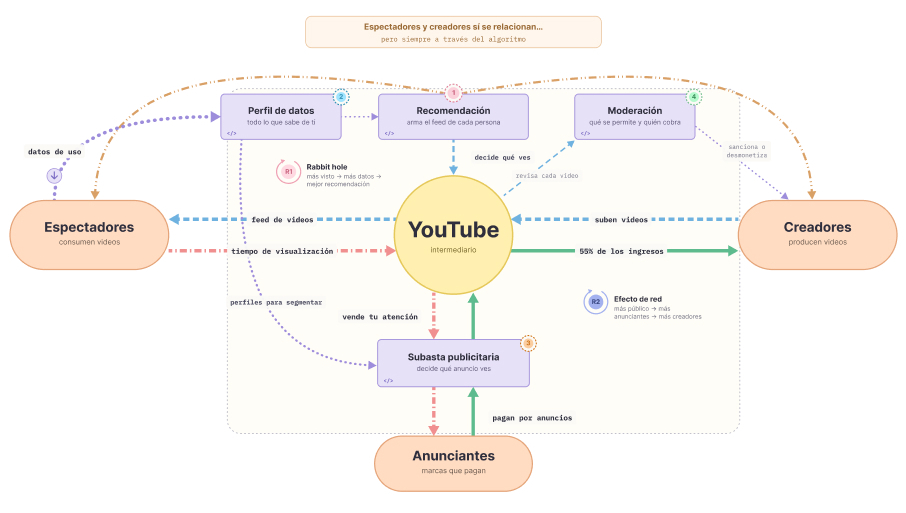
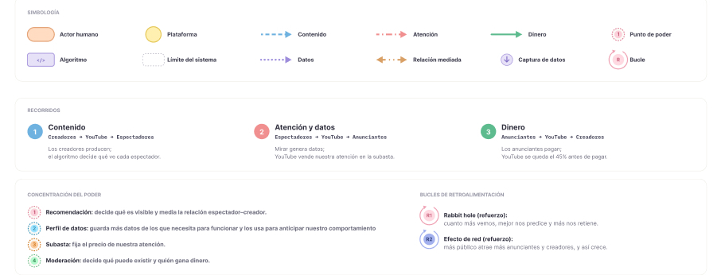
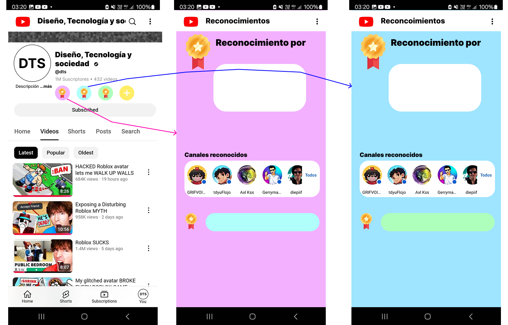

YOUTUBE
YouTube es una plataforma de internet donde puedes ver y compartir videos. Allí puedes encontrar videos de música, noticias, entretenimiento, tutoriales y mucho más. También puedes crear tu propio canal, subir videos, comentar y suscribirte a otros canales.


Materialización: Recomendaciones personalizadas.
- Consecuencia: Seguir viendo videos.
- Usuario
- ¿Quién se beneficia? Plataforma y creadores de contenido.
- ¿Quién es perjudicado? Usuario consumidor que se ve retenido viendo videos.
- Valores inscritos: engagement.
Materialización: YouTube Premium, opciones limitadas
al no ser Premium (menos calidad, anuncios, no ver en
segundo plano, etc.).
- Consecuencia: Tener que pagar o asumir una experiencia
no tan buena.
- Usuario
- ¿Quién se beneficia? Plataforma y personas con el
dinero para pagarlo.
- ¿Quién se ve perjudicado? Usuarios que no tienen
dinero para pagar.
- Valores inscritos: exclusividad.
Materialización: Suscriptores, “trampas” para tener
más visualizaciones, placas de YouTube y aumento de
ingresos al creador.
- Consecuencia: Sentir la presión de seguir el ritmo
de la plataforma, tener que crear contenido todo el tiempo.
- Creador de contenido
- ¿Quién se beneficia? Plataforma, creadores de contenido
y usuarios consumidores.
- ¿Quién se ve perjudicado? Creadores y consumidores.
- Valores inscritos: competencia.
Script Alternativo: “Se consciente y auténtico”
Materialización: Premios a comportamientos saludables o con un enfoque distinto al rendimiento, de forma grupal y no individual. Medallitas se ven en la info del canal de cada creador y aparecen también los otros creadores con los que comparte el reconocimiento.
Consecuencia: Reducir la competencia, aliviar la carga y que los creadores de contenido se sientan más libres.
Valor inscrito: Priorizar bienestar y autenticidad.
